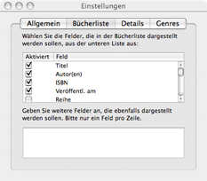

List Preferences
This portion of the preferences allows you to specify which fields are visible when looking
at lists of book records.

Adjusting Fields
You may choose which fields you want visible by checking the items in the list. Furthermore, you may rearrange the order of the fields by dragging and dropping within the list. If you'd like to see some of the custom fields that you have defined, enter their names in the text box below the list.